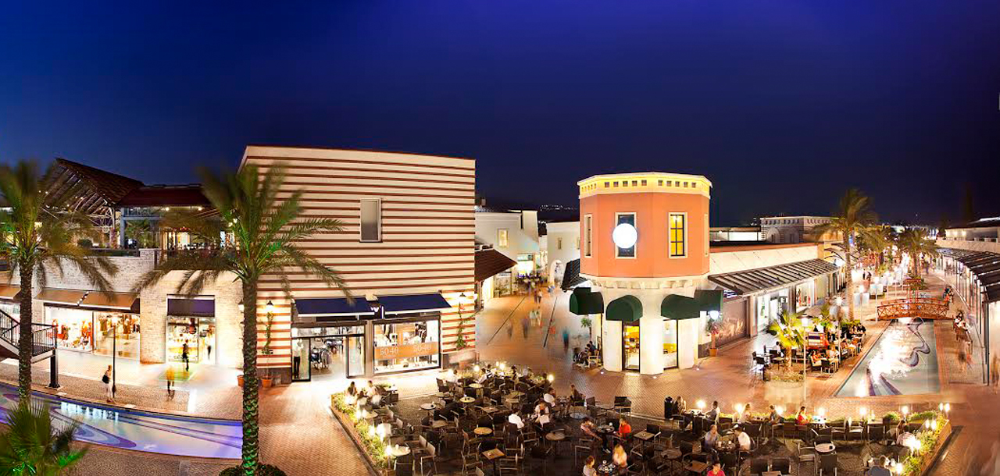
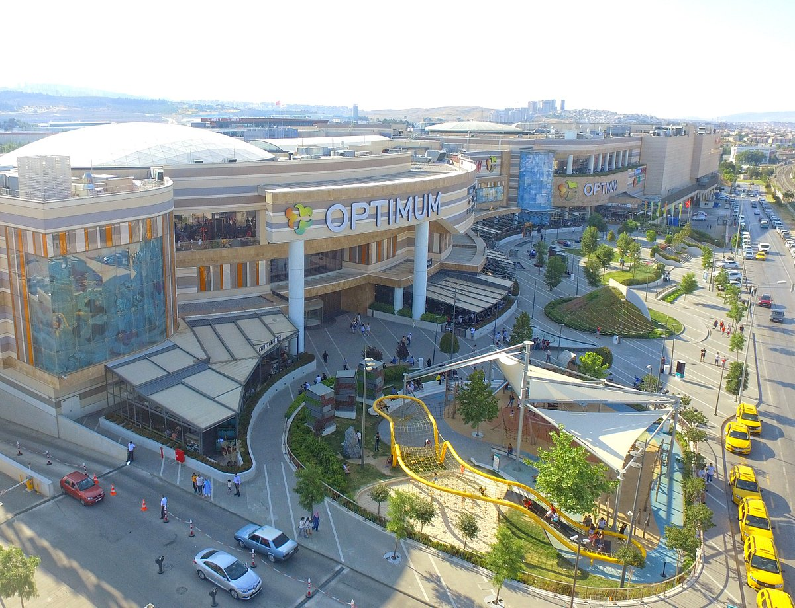
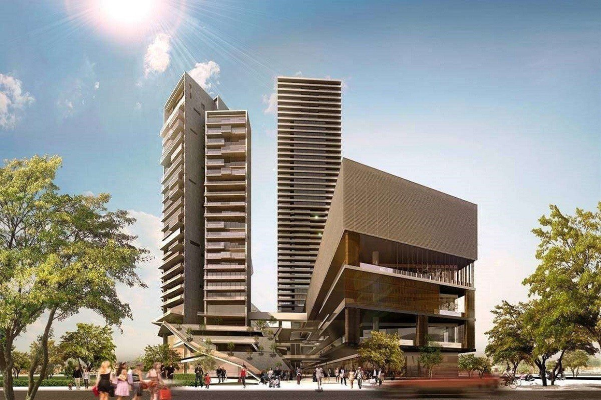

Alışveriş Merkezleri
- Forum Bornova - Ege Bölgesi ve İzmir'in ilk açık hava alışveriş merkezi olan Forum Bornova'da; IKEA, Kipa Extra, 128 mağaza, 7 sinema salonu ve 3.000 araçlık otopark bulunmaktadır. 12 Ekim 2006 tarihinde açılan Forum Bornova, Ege Bölgesinin ve İzmir'in ilk açıkhava alışveriş merkezidir. 2008 yılında ICSC tarafından European Shopping Centre Awards finalistlerinden biri olarak Avrupa'nın en iyi alışveriş merkezlerinden biri olarak seçilmiştir.

-
Optimum Outlet - 365 gün indirimli alışveriş keyfi sunan İzmir Optimum, 170 seçkin markayı İzmirliler’le buluşturuyor. 2012 yılında açılan, konsepti, mimarisi, kültürel ve sanatsal aktiviteleri ile birçok yeniliği bünyesinde barındıran, önemli sosyal ve kültürel değişim alanı olarak faaliyet gösteren Optimum Outlet İzmir, sahip olduğu yenilikler sayesinde bölgenin en canlı merkezi olmuş durumda. Özgün konseptiyle her zaman fark yaratan Optimum, Türkiye’nin ve dünyanın önde gelen markalarıyla müşterilerine kaliteyi ve çeşitliliği aynı çatı altında sunuyor.

-
Ege Perla- Her katında kendine özgü, farklı konseptiyle dikkat çeken 100’ün üstünde yerli ve yabancı markaya ev sahipliği yapan Ege Perla, 490 milyon TL’lik yatırımıyla İzmir’in en gözde alışveriş ve yaşam merkezlerinden biri olmaya aday. 956 araç kapasiteli otoparkı, spor merkezi, sinema salonu, birbirinden lezzetli restoranları ve en seçkin moda markalarını misafirleri ile buluştururken, kendine has tarzıyla İstanbul’dan İzmir’e taşınacak TOY Tiyatro ise sadece komedi oyunları ile Ege Perla misafirleri ile buluşacak.

Izmir'deki Doğal Miraslarımız için tıklayınız